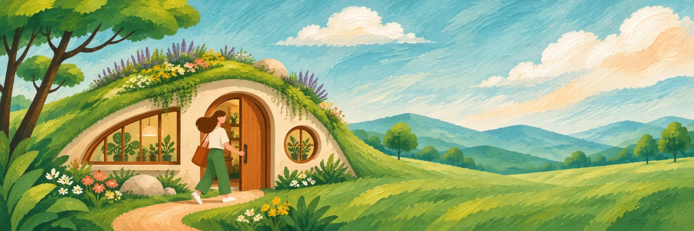
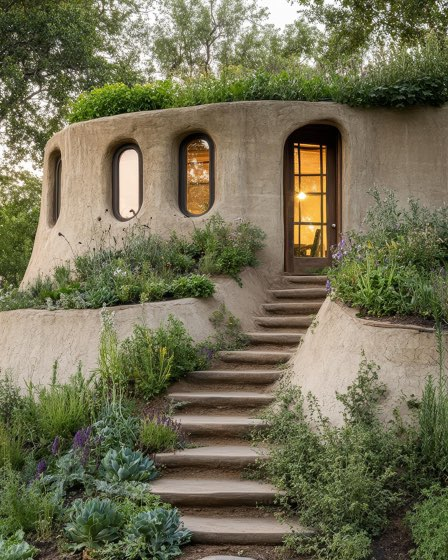
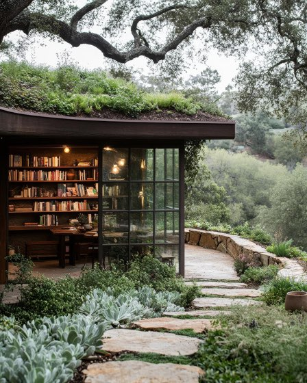
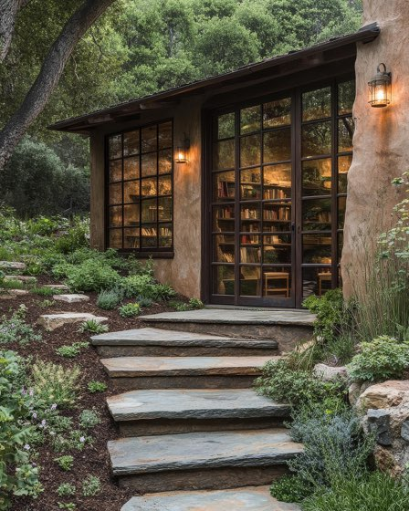
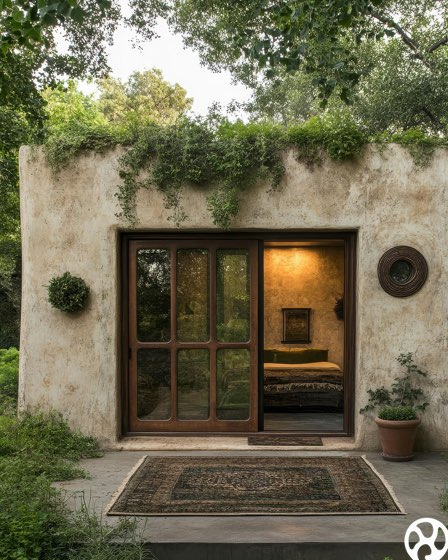
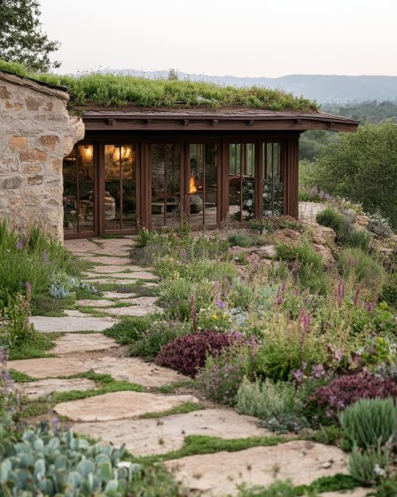
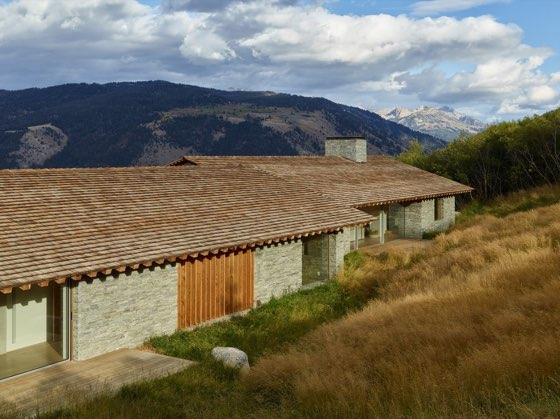
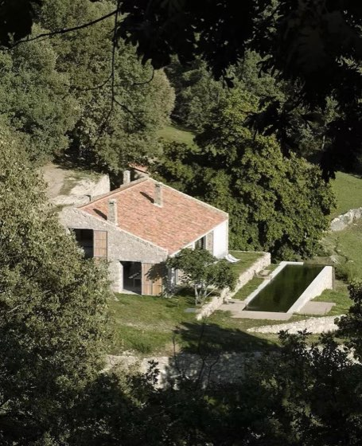
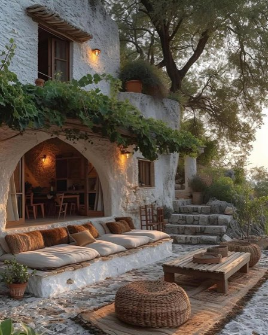
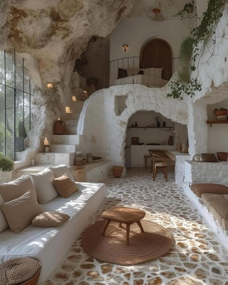

Дом-землянка —
самый старый утеплительсама планета
Дом заглубляют в склон или обваловывают грунтом с боков и сверху, открывая солнцу только южный фасад. Смысл в одном факте: воздух над землёй мечется от летней жары к зимнему морозу, а сама почва на глубине нескольких метров этих качелей почти не чувствует — держится круглый год у средней годовой отметки. Дом, укрытый землёй, получает эту стабильность в подарок: зимой не нужно греть от мороза, летом не нужно спасаться от жары. Снаружи — холм с окнами, внутри — светлая комната, а на крыше растёт луг.
← Каталог технологий · Технология возведения 05
Самый старый утеплитель — сама планета
Все предыдущие технологии каталога решали, из чего сделать стену, чтобы она держала тепло. Дом-землянка решает задачу иначе: он вообще перестаёт бороться с наружным воздухом и прячется от него в землю. Дом заглубляют в склон или обваловывают грунтом с боков и сверху, открывая солнцу только южный фасад. Снаружи получается холм с окнами; внутри — светлая обычная комната.
Смысл в одном физическом факте. Воздух над землёй мечется от летней жары к зимнему морозу, а вот сама земля на глубине нескольких метров этих качелей почти не чувствует — её температура держится круглый год примерно на средней годовой отметке. Дом, укрытый землёй, получает эту стабильность в подарок: его стены соприкасаются не с сорокаградусным перепадом наружного воздуха, а с ровным, спокойным грунтом. Зимой не нужно греться от мороза, летом — спасаться от жары.
Ниже — как такой дом устроен, за счёт какой физики он работает, откуда пришла идея и почему при всей своей привлекательности землянка подходит далеко не всякому участку.
Как это устроено
Есть два основных подхода. Первый — обваловка: дом строят на уровне земли, а затем присыпают грунтом стены (иногда все, иногда три из четырёх) и часто крышу. Второй — заглубление в склон: дом врезают в естественный холм, так что задняя и боковые стены оказываются в земле сами собой, а открытым остаётся только выходящий из склона фасад. В обоих случаях этот открытый фасад разворачивают к солнцу — в северном полушарии на юг — ради света и зимнего тепла.
Ключевое отличие такого дома от обычного — нагрузки. Стены и крыша здесь держат не только себя, но и тонны грунта сверху и сбоку, поэтому конструкция нужна мощная: чаще всего это бетон, реже — усиленная кладка или массивное дерево. Это не технология лёгкого самостроя; здесь считают и армируют всерьёз.
И главное, от чего зависит, будет дом сухим убежищем или сырой ямой, — вода. Гидроизоляция и дренаж в землянке важнее всего остального: грунт должен отводить дождь и талую воду прочь от стен, а не прижимать её к ним. Сверху дом обычно накрывают земляной, «зелёной» кровлей, на которой растёт трава, — она довершает маскировку дома в ландшафте и защищает гидроизоляцию.
Почему это работает
Физика здесь тоньше, чем «земля утепляет». Грунт — плохой утеплитель сам по себе; его сила в другом — в огромной инертности и стабильности. Поверхностный воздух за год проходит путь в сорок-пятьдесят градусов, а почва на глубине двух-четырёх метров сглаживает эти колебания почти до нуля и держится около средней годовой температуры места — в умеренном климате это обычно комфортные плюс восемь–двенадцать. Земля не столько греет дом, сколько лишает его крайностей: она никогда не бывает такой холодной, как январский воздух, и такой горячей, как июльский.
Отсюда главный эффект — обрушение нагрузок на отопление и охлаждение. Дому больше не нужно бороться с сорокаградусной разницей: перепад между ровным грунтом и комфортной комнатой невелик, и поддерживать его почти ничего не стоит. К этому южное остекление добавляет зимнее солнце, а тяжёлые внутренние поверхности — тепловую массу, сглаживающую суточные колебания. В сумме получается дом, который во многом отапливает и охлаждает себя сам.
Земля даёт и то, чего не даёт ни одна стена. Она отсекает ветер, который у обычного дома уносит тепло. Она глушит шум — в землянке очень тихо. И она защищает от огня: холм не горит. А земляная кровля возвращает ландшафту ровно ту площадь, которую дом у него занял, — на месте крыши растёт луг.
Откуда это взялось
Прятать жильё в землю люди научились очень давно и всюду, где зима сурова, а строить не из чего. В Исландии столетиями строили дерновые дома (torfbæir), укрытые толстым слоем дёрна, — иначе на безлесном ветреном острове было не выжить. Американские переселенцы в безлесных прериях резали кирпичи прямо из дёрна и складывали из них землянки-«соддис». А заглублённые в землю жилища-полуземлянки известны у десятков народов от Сибири до Северной Америки. Земля как убежище от холода — одно из древнейших решений человечества.
В осознанную современную архитектуру идею вернул американец Малкольм Уэллс, которого называют отцом современного «подземного» строительства. С 1960-х он проектировал и пропагандировал дома, укрытые землёй, доказывая, что здание может не отнимать участок у природы, а вернуть его: то, что заняла крыша, отдаётся лугу.
Массовый интерес пришёл с нефтяным кризисом 1970-х: когда энергия резко подорожала, дом, почти не требующий отопления, вдруг стал не чудачеством, а расчётом. С тех пор технология то забывалась, то возвращалась, а сегодня, на волне интереса к энергоэффективности, землянка переживает новое рождение — уже как высокотехнологичное пассивное жильё.
Плюсы и ограничения
Достоинства землянки редки и весомы: почти стабильная температура без отопления и охлаждения; защита от ветра, шума и огня; минимальное вторжение в пейзаж и возвращённый ландшафту луг на крыше. Для холодного и континентального климата это один из самых убедительных способов построить по-настоящему тёплый дом.
Но и требования у неё жёстче, чем у любой другой технологии каталога. Первое и главное — вода. Ошибку в гидроизоляции обычной стены можно потом исправить снаружи; ошибку в землянке — почти нельзя, гидроизоляция закопана под тоннами грунта. Поэтому землянка требует сухих грунтов, хорошего дренажа и безупречной работы, а сырой или подтопляемый участок для неё противопоказан. Второе — конструкция: держать тонны земли дорого, чаще всего это бетон с арматурой, и о «дешёвом самострое» речи не идёт. Третье — свет и воздух: раз открыт только один фасад, планировку, окна и вентиляцию нужно продумывать тщательно, иначе дом получится тёмным и душным; часто спасают световые фонари и внутренние дворики-атриумы.
Отсюда и область применения, узкая, но чёткая: холодный и континентальный климат, склоны с южной экспозицией и сухие, хорошо дренируемые грунты. Там, где эти условия сходятся, землянка почти вне конкуренции; там, где не сходятся, за неё лучше не браться.
Как это выглядит вживую
Дом, укрытый землёй: стены, врезанные в склон, травяные крыши и даже жильё, вырубленное в скале, — земля как утеплитель и защита.









Фотографии принадлежат авторам, указанным под снимками; подпись ведёт на исходную публикацию в Instagram.
Итог: дом, который занимает у планеты покой
Дом-землянка — единственная технология каталога, где утеплитель не покупают и не производят, а берут взаймы у самой планеты: ровную, круглогодичную температуру грунта на глубине. За это приходится платить — прочной дорогой конструкцией, безупречной гидроизоляцией и правильным участком, — но взамен получается дом, который во многом сам себя отапливает и охлаждает, стоит в тишине за ветром и огнём и почти не виден в пейзаже.
Урок этой технологии — про место. Землянка ярче всех остальных показывает, что лучшая стратегия зависит не от материала, а от участка: нужен южный склон, сухой грунт и холодный климат, где стабильность земли особенно дорога. Совпали условия — и планета сама возьмёт на себя половину работы отопления; не совпали — и никакая землянка не поможет. Строить с умом — значит сначала читать участок, а уже потом выбирать технологию.
Читайте такжеПассивное отопление: солнце, масса и тёплый контур — почему тепловая масса работает только внутри утеплённого контура.